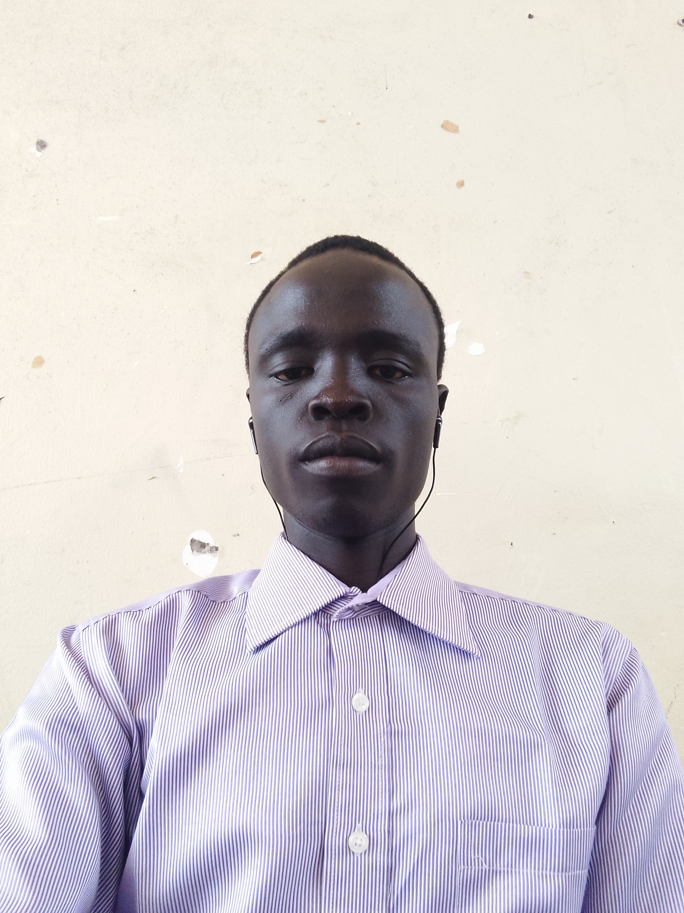

I am Alex Musa Paulino Longworong a student of Ndejje university. I am pursuing a Bachalor's degree in
Computer Science-currently in year two.
I am passionate to share my glimpse into my journey, passions, and aspirations.
I am passionate about technology and love working on complex and challenging problems.
This gives me the courage and confidence to do computer science.
As a computer science major at Ndejje university, I am deeply fascinated by software development. My academic pursuits have euiped me with strong foundation in software development and more particularly website development. My career aspirations lies in software development and I am actively seeking opportunities to apply my skills in software development to solve real world problems and contribute to digitalisation in Africa.
